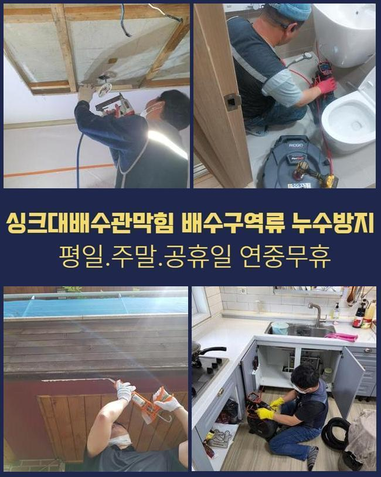
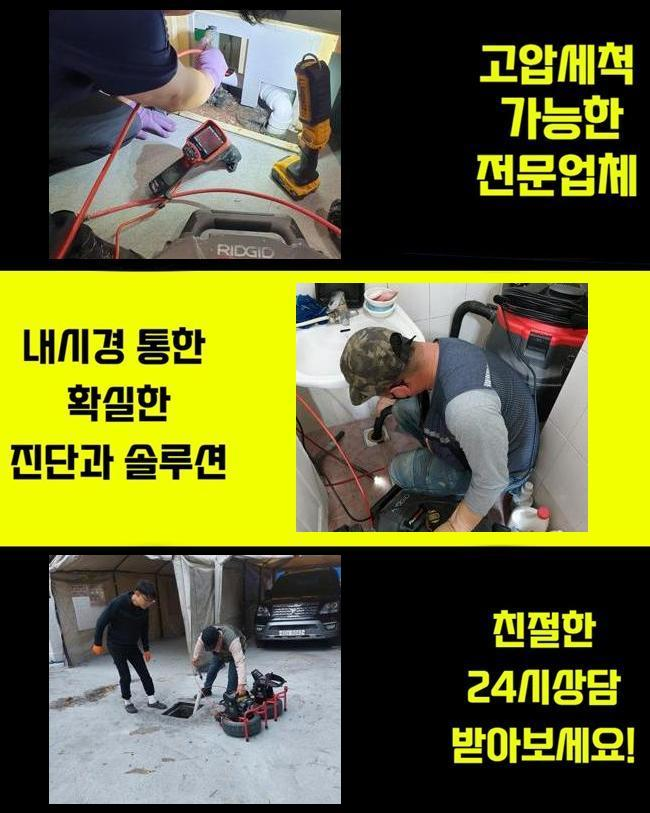
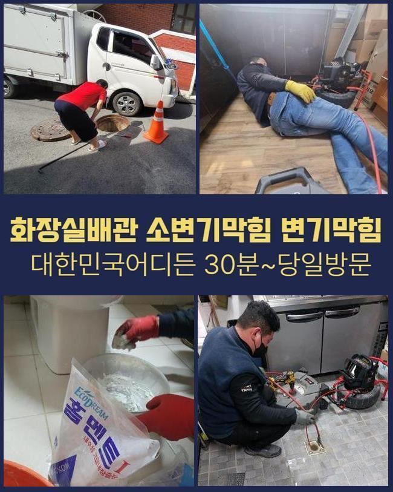
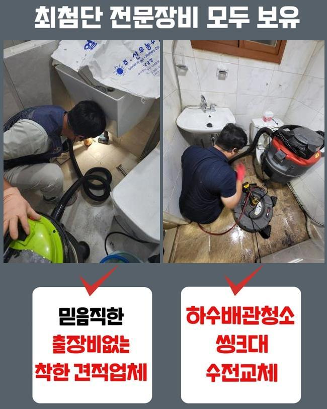
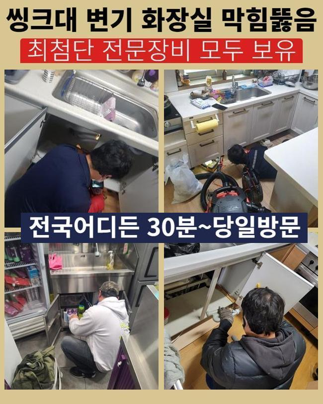
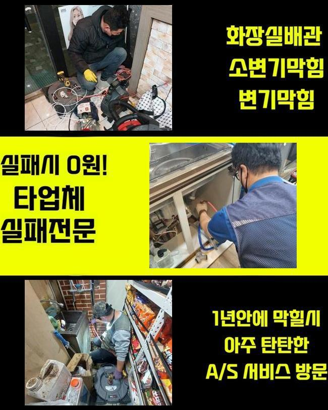

🏠 용인 서농동화장실뚫음 구성동 배관뚫기 수리업체
용인 싱크대막힘 전문 시공 후기

📋 작업 개요
- 위치: 용인
- 서비스 유형: 싱크대막힘, 하수구막힘, 배관막힘, 맨홀막힘, 뚫는업체, 배관청소, 고압세척
- 작업 일시: 2025. 2. 4. 21:48
- 업체명: 하수구수사대 (010-5615-2118)
🔍 문제 상황
용인 서농동화장실뚫음 구성동 배관뚫기 수리업체
주방에서 주방라인이 막힌다면 설거지등에 여러 피해를 감내해야하죠
요식업소에서 이같은 문제들이 생기면 영업자체에 악영향력들을 미쳐요
그렇기에 전문적이고 해결하는게 필요한데요
요식업소에서 배수구에서 통수오류가 생기게 되었어요
근방의 음식점에까지 배수불가의 증상이 보여졌어요
해당 상황은 메인배수관에 이상이 생겼을 여지를 생각해야 합니다
때문에 공유관로를 이용하는 맨홀쪽의 진단도 진행시켜야했던 현장이였는데요
도착한 후 먼저 주방 씽크대부분이 제 기능을 못하는것을 관찰할 수 있었습니다

🔎 원인 분석
💡 전문가 진단: 정밀 진단 장비를 사용하여 슬러지의 고착 여부를 판명하고 타격/세척 작업을 실시했습니다.
육안으로는 물빠짐이 불가했고 올바른 작업이 실시되어야했어요
배관의 증상들은 수백가지의 요소로 발생되는데 수많은 현장 경험으로 미루어볼때 상당수의 요소는 구조와 관련된 문제와 더불어 기름들이 축적되어서죠
이러한 배수 정체는 위생에까지 좋지못한 영향력을 미치므로 그에 맞는 해결책들을 꾀했어요
내시경카메라를 관로안으로 넣어주면서 상태들을 살폈더니 전체적으로 잔해들이 누적된것을 알 수 있었는데요
내시경기기는 시야확보가 안되는 하수관로를 확인하는 기계로 렌즈가 있는 선을 배수관으로 투입해 그때그때 육안으로 관찰하게해주는 기기입니다
점검하니 하수가 흐르질 않고 고여버린 상황으로 보였습니다
하수도가 오래된 경우라던가 구조와 관련된 문제였다기보단 배수 과정에서 흐르던 잔재가 누적되어 배수진행을 멈추게한것이 그 까닭이였습니다
주방의 관로와 외부라인이 이어져있는 구조여서 조리공간에서 등장한 이물들이 바깥까지 영향력들을 미친 현상으로 보였습니다
그 까닭을 파악하고 서둘러 하수도를 조치해보고자 청소해주었어요
이 시기에 이용한건 플렉스 샤프트라는 장비들로 해당 기계는 관로에서 돌며 오염물을 제거하는 결정적인 장치죠

🔧 작업 과정
샤프트기계를 삽입하여주면 주방쪽이 막혀버렸을때 오염원을 제거해내고 덧붙여 표면을 지켜내면서 수월하게 작업을 진행시킬 수 있죠
샤프트의 사슬들을 삽입하여 이물이 있는 위치에 도달하여 체인들로 흡착물을 제거시켰어요
다양한 잔재가 샤프트도구에 걸려서 빠져나왔어요
뒤섞인 찌꺼기를 확인하니 예상한 바와 같이 싱크볼에서 흐르게된 음식쓰레기와 기름슬러지들이 대부분이였어요
여러 사례를 보건대 식재료들이 대다수였는데 손질하는 단계에서 제거된 뿌리의 모습들로 개수대에서 빠지면서 막히게하는 까닭이 된것입니다
이러한 잔해들은 안전하게 배출되지 못하여 배수관에서 정체되어 막힘문제를 양산시킵니다
음식물들과 기름성분들도 어마어마하게 배출됐는데 조리공간에서 이용되는 기름성분이 흘러나가며 구간마다 고착된것이죠
기름성분은 관로에서 조금씩 고착되며 내부표면에 흡착되고 다른 식자재들과 합쳐져 넓은 범위가 막혀버리게 하죠
오일들은 날이갈수록 딱딱해지므로 간단하게 제거시키는것에 무리가따르는 사례가 대부분이에요
샤프트기기를 사용해 이물들을 탈락시키고 석션기기를 삽입하여 떨어져나간 고착물들을 흡입하여 깔끔하게 정리해주었어요
고형상태에 있던 기름성분과 떨어져나온 오염물들도 폐기한 후 작업대상 관로를 내시경기기로 점검하고 이상이 없는지 확인했는데요
증상들은 바로 잡았고 밖의 하수관의 솟아오르는 증세도 깔끔히 완화되었어요
저희전문진은 의뢰인께 씽크대 관로의 관리들에 대한 유용한 내용들을 설명했어요
먼저 씽크대에 이물질들을 여과없이 배출을 금하는게 도움이된다고 안내했는데요
더 나아가 용해되지 않는 식재료나 기름의경우 하수구 막힘의 여러 트러블의 요소가 되므로 평상 시 잔여물질들을 씽크볼로 배출시키기 전 선제적으로 처리해줄것을 부탁드렸어요
기름의경우 점성이 높고 안쪽에서 굳어버리므로 사용한 기름성분은 키친타올로 닦고서 세척하는게 권장하고 있는 방식이에요


✅ 작업 완료
예기치못한 배수정체를 피하려면 정기적으로 배수관을 세정해주고 상황별로 클리너들을 쓰는게 도움되는것 또한 말씀드렸어요
의뢰자께서는의뢰인은 저희의 설명을 들으시고는 신경써서 관리실시를 꼼꼼히 해보겠다 말씀하셨죠
하수구 오류들은 방임한다면 최초상태보다 심해지므로 앞서서 조속히 수습하는게 중요하겠습니다
끝내 의뢰자의 고민을 타파하여 다행이라 생각했고 예기치못한 배수정체를 막아내기 위한 적재적소의 관리책 이용이 동반해야할 것을 재차 전해드립니다



⚠️ 주방 싱크대 배관 막힘 예방 수칙
- ✅ 기름기가 묻은 식기나 프라이팬은 설거지 전 키친타올로 반드시 기름때를 닦아내세요.
- ✅ 주기적으로 싱크대 개수대에 뜨거운 물을 가득 받아 한 번에 내려 배관 내부 기름을 씻어내세요.
- ✅ 배수구 거름망을 미세한 필터로 사용하시고 음식물 찌꺼기가 틈으로 새어 들지 않게 관리하세요.
- ✅ 베이킹소다와 식초를 뜨거운 물과 함께 일주일에 한 번씩 부어주면 배관 살균과 막힘 예방에 좋습니다.
💡 핵심 정리
- 확실한 장비 작업(내시경 점검 및 샤프트 스케일링)으로 원인을 뿌리 뽑습니다.
- 작업 후 1년 이내에 동일한 부위 재발 시 100% 무상 A/S 서비스를 보장합니다.
- 서울 · 경기 · 인천 전 지역에 24시간 언제든 긴급 출동할 수 있도록 항시 대기 중입니다.
❓ 자주 묻는 질문 (FAQ)
🚨 용인 싱크대막힘 문제로 고민이신가요?
정확한 원인 진단과 확실한 시공으로 재발 없는 해결을 약속드립니다.
24시간 긴급 출동 | 서울 · 경기 · 인천 전지역 | 1년 내 재발 시 무상 A/S